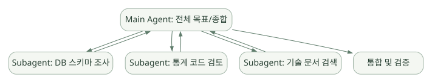

확장과 운영 / 단원 05
역할 분담과 이벤트 제어 구성하기
Subagent와 실험적 Teams, Hook과 Plugin·무인 실행
먼저 연결해 보기
Subagent는 메인 Agent에게 위임받아 별도 Context에서 작업하고 결과를 돌려주는 패턴입니다. 여러 세션이 직접 교신하는 Agent Teams와는 구조·비용·실험 상태가 다릅니다. 역할 분리가 실제 이득을 주는지 단일 Agent와 비교해야 합니다.
Hook은 특정 실행 이벤트에 검사를 연결하고, Plugin은 여러 확장 요소를 재사용·배포하는 단위입니다. Hook의 설정 예시만으로 정책 검증 코드가 완성되는 것은 아니며, 무인 실행에서는 승인 입력을 기대할 수 없는 조건도 따로 설계해야 합니다.
읽는 관점별도 Context가 OS·파일·DB 권한까지 분리하는지, Hook 실패가 명시적 거부와 같은지 확인하세요.
12. Subagents·Agent Teams·Multi-Agent#
12.1 Subagent는 왜 필요한가?#
한 Agent가 파일 탐색·통계 분석·문서 조사·검증을 전부 수행하면 Context가 길어지고 책임 구분이 어려워질 수 있다. Subagent는 별도 Context와 역할·도구 설정으로 한 작업을 위임받고 결과를 메인 대화로 돌려주는 패턴이다. [R06]
넓은 도식은 가로로 이동하며 읽을 수 있습니다. 도식 크게 보기 ↗

원문에 수록된 학습용 도식입니다. 노드·화살표·분기 라벨을 보존해 다시 배치했습니다. 세부 조건과 예시·구현의 구분은 앞뒤 본문을 함께 읽으세요.
도식 원문 보기 (Mermaid)
flowchart TB
P[Main Agent: 전체 목표/종합] --> A[Subagent: DB 스키마 조사]
P --> B[Subagent: 통계 코드 검토]
P --> C[Subagent: 기술 문서 검색]
A --> P
B --> P
C --> P
P --> O[통합 및 검증]12.2 Subagent 파일 예시#
<!-- .claude/agents/data-reviewer.md -->
---
name: data-reviewer
description: 공개·합성 공정 데이터의 스키마와 통계 검증을 수행한다.
tools: Read, Grep, Glob
model: sonnet
---
당신은 읽기 전용 검토자다.
- 코드 수정 대신 문제와 근거를 제시한다.
- 수율 계산의 분모·분자를 확인한다.
- 결측, 중복, 이상치를 명확히 구분한다.
- 검증하지 않은 가설은 추정이라고 표시한다.주의: tools 필드를 통해 Subagent의 능력을 줄일 수 있어도, 절대적인 데이터 보안과 실행 경계는 상위 정책 및 OS·서버 권한과 함께 검증해야 한다. 모델 이름·옵션·에이전트 스키마는 배포 버전 문서를 확인한다. [R06]
12.3 Subagent의 격리 수준#
| 구분 | 분리되는 것 | 자동으로 분리되지 않을 수 있는 것 |
|---|---|---|
| Context | 독립 대화·작업 초점 | 같은 프로젝트 파일·외부 서비스 접근 |
| 도구 설정 | 에이전트별 허용 도구 정의 가능 | OS 사용자 권한, DB 계정 권한 |
| 메모리 | Subagent 고유 Auto Memory 구성 가능 | 모든 에이전트가 물리적으로 다른 저장소를 가진다는 보장 |
| 모델 | 작업별 모델/노력 수준 설정 가능 | 비용·보안 정책 전체 |
Subagent가 메인 Agent로 반환한 요약이 잘못되었을 가능성이 있으므로 근거·입력·결과 파일을 검증한다.
12.4 Agent Teams는 Subagent와 다르다#
공식 문서는 Agent Teams를 실험적 기능이며 기본 비활성화라고 명시한다. 여러 Claude Code 세션이 독립 Context를 유지하면서 공유 작업 목록과 직접 메시지 교환을 통해 협업한다. [R07]
| 항목 | Subagent | Agent Teams |
|---|---|---|
| 구조 | 메인 Agent의 위임 작업 | 여러 Claude Code 세션과 팀 리더 |
| 결과 통신 | 메인으로 결과 보고가 중심 | 팀원 간 직접 교신 가능 |
| 복잡성 | 비교적 낮음 | 높음 |
| 토큰 소비 | 대체로 제한적 | 병렬 세션 수에 따라 커짐 |
| 적절한 작업 | 독립적인 검색·리뷰 | 복잡한 병렬 설계·상호 검토 |
| 주의 | Context 및 권한 경계 | 협업 충돌·작업 조정·비용 증가·실험적 제한 |
12.5 Agent Teams 활성화 (실험용)#
{
"env": {
"CLAUDE_CODE_EXPERIMENTAL_AGENT_TEAMS": "1"
}
}실험용 설정이므로 기업 운영·반도체 생산 환경의 기본 구조로 즉시 채택하지 않는다. 예상한 작업 분할이 병렬성 이익을 주는지, 같은 파일을 건드려 충돌하는지, 총비용이 증가하는지 조사한다. [R07]
12.6 Multi-Agent가 무조건 좋은 것은 아니다#
다음 상황에서는 단일 Agent가 더 낫다.
- 절차가 짧고 순차적일 때.
- 원본 데이터 접근 범위가 제한되어 있을 때.
- 서로 다른 Agent가 같은 파일/DB 상태를 수정해야 할 때.
- 답변 정확성 확보를 위한 검증 절차가 아직 없는 초기 단계.
- 추가 모델 호출 비용을 감당하기 어려울 때.
단순한 반도체 EDA 데모는 우선 하나의 Agent + 검증 가능한 DB·Python Tool로 시작하고, 서로 다른 독립 검토 작업의 효용이 확인되면 Subagent로 확장하는 게 합리적이다.
13. Hooks·Plugins·자동화#
13.1 Hooks는 Skill과 어떻게 다른가?#
Skill은 모델이 참고할 작업 지식이고, Hook은 특정 이벤트에 외부 명령·검사·통지 등을 연결하는 메커니즘이다. 공식 문서는 Hook을 프로젝트 규칙을 강제하고, 코드 포맷팅이나 승인 전 검사를 자동화하는 수단으로 소개한다. [R09][R11]
대표 이벤트 개념#
SessionStart: 세션 시작과 함께 환경 점검/정보 주입.PreToolUse: Tool 호출 전 조건 검사·거부·수정 등의 결정.PostToolUse: 실행 결과 후 검증·로깅·추가 처리.Stop: Agent가 종료하려 할 때 완료 조건 점검.SubagentStop: Subagent 종료와 관련된 검사.PreCompact등: Context 압축 전후의 별도 이벤트(정확한 이벤트 목록·필드는 [R11] 확인).
13.2 Hook 구성 예시#
{
"hooks": {
"PreToolUse": [
{
"matcher": "Bash",
"hooks": [
{
"type": "command",
"command": "python3 .claude/hooks/inspect_command.py"
}
]
}
]
}
}inspect_command.py가 Tool 인자를 표준 입력 JSON으로 받고 정책에 맞는 결과를 반환하도록 개발해야 한다. 위 설정만 복사하면 차단 기능이 완성되는 것은 아니다. 출구 코드 및 JSON 결정 형식은 공식 Hook Reference의 이벤트별 규약을 따른다. [R09][R11]
PreToolUse에서 차단하는 JSON 응답 예시#
{
"hookSpecificOutput": {
"hookEventName": "PreToolUse",
"permissionDecision": "deny",
"permissionDecisionReason": "이 작업 공간에서는 변경·삭제 명령을 실행할 수 없습니다."
}
}이 예시는 공식 Hook Guide에서 설명하는 구조다. 호출별 패턴 검사, Shell 파싱, 우회 경로 검증이 없으면 실질적인 안전성은 부족하다. [R09]
13.3 Hook 설계 시의 위험#
- Hook이 잘못 구현되면 정상 작업을 차단하거나 위험 작업을 통과시킬 수 있다.
- 명령의 앞부분 문자열만 검사하면 셸 리다이렉션·파이프·복합 명령을 놓칠 수 있다.
- Hook 자체가 높은 OS 권한으로 실행되면 공격면이 커진다.
- 프롬프트/Agent 기반 Hook은 LLM 판단이 개입하므로 완전한 결정적 정책으로 오해하지 않는다.
- Hook 실행 실패와 명시적인
deny는 동일하지 않을 수 있다. 실패 시 차단 여부는 반드시 테스트한다.
보안에 중요한 규칙은 가장 아래쪽 경계(읽기 전용 계정, 파일 권한, 네트워크 ACL)에서도 강제한다.
13.4 Plugins는 배포와 재사용의 단위#
Plugins는 Skills·Agents·Hooks·MCP 서버 구성 등 확장 요소를 패키징하고 배포할 수 있도록 하는 생태계다. 개별 Skill 파일 하나와 같은 개념이 아니다. 공식 문서에는 플러그인 마켓플레이스와 구성요소·권한·보안 검토 지침이 있다. [R12]
| 요소 | 단일 저장소 작업 시 | 조직 확장 시 |
|---|---|---|
| Skill | .claude/skills/로 충분 |
검증된 Plugin으로 버전 배포 가능 |
| Subagent | .claude/agents/ |
팀 공통 전문 Agent로 패키징 |
| Hooks | 프로젝트 설정·스크립트 | 조직 보안 정책 및 Plugin 배포 |
| MCP | 개별 서버 연결 | 승인된 서버 리스트·정책·감사 |
| Plugin | 선택 사항 | 공통 기능의 배포/버전 관리 단위 |
13.5 자동화·CI·무인 실행#
claude -p와 Agent SDK를 통해 배치·CI/CD·스크립트에서 Agent를 사용할 수 있다. 그러나 무인 실행은 사용자 승인 입력을 기대할 수 없으므로 도구 허용·실패 처리·시간 제한·격리·출력 검증을 먼저 설계해야 한다. [R18][R25]
# [개념 예시] 사전에 권한과 입력 경로가 통제된 환경에서만 사용
claude -p "합성 데이터셋의 컬럼을 읽고 품질 검사 계획만 작성해줘" \
--output-format json클라우드 스케줄링, 루틴, GitHub 이벤트 트리거 등은 제품·계정·플랫폼별 별도 기능과 실험 상태를 갖는다. 자동화 가능성을 제품 선택 시 검토하되, 로컬 CLI 기본 기능과 동일하다고 단정하지 않는다.